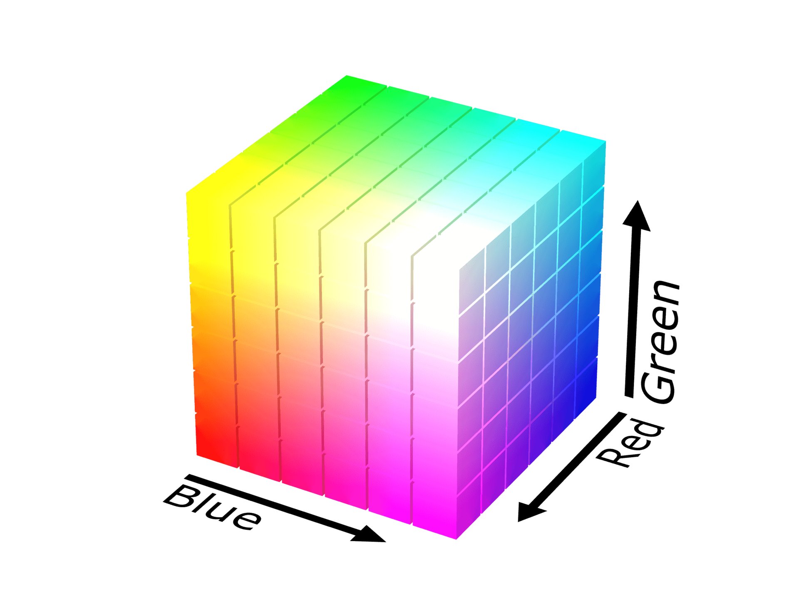
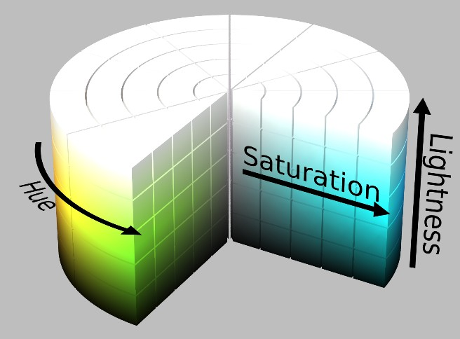
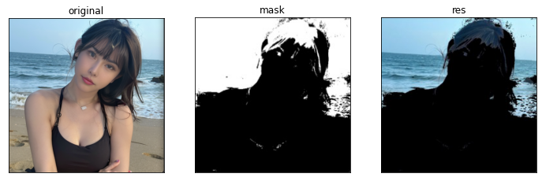
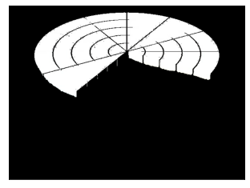

颜色空间
RGB颜色空间
RGB（红绿蓝）是依据人眼识别的颜色定义出的空间，可表示大部分颜色。但在科学研究一般不采用RGB颜色空间，因为它的细节难以进行数字化的调整。它将色调，亮度，饱和度三个量放在一起表示，很难分开。它是最通用的面向硬件的彩色模型。RGB颜色空间适合于显示系统，不适合于图像处理。

HSV颜色空间
HSV表达彩色图像的方式由三个部分组成：
- Hue（色调，色相）
- Saturation（饱和度，色彩纯净度）
- Value（明度）
在HSV颜色空间下，比RGB更容易跟踪某种颜色的物体，常用与分割指定颜色的物体。
用下面这个圆柱体来表示HSV颜色空间，圆柱体的横截面可以看做是一个极坐标系 ，H用极坐标的极角表示，S用极坐标的极轴长度表示，V用圆柱中轴的高度表示。

在RGB颜色空间中，颜色由三个值共同决定，比如黄色为(255,255,0)，在HSV颜色空间中，黄色只有一个值决定，Hue=60。
饱和度表示颜色接近光谱色的程度：饱和度越高，说明颜色越深，越接近光谱色；饱和度为0表示纯白色。
明度决定颜色空间中颜色的明暗程度：明度越高，表示颜色越明亮；明度为0表示纯黑色（此时颜色最暗）。
HLS 颜色空间
HLS颜色空间和HSV颜色空间比较类似，区别在于最后一个分量不同。HLS中的L表示Lightness（亮度），亮度为100表示白色，亮度为0表示黑色。HSV中的V表示明度，明度为100表示光谱色，明度为0表示黑色。

提取白色物体时，使用HLS更方便，因为HSV中的H没有白色，需要由S和V共同决定（S=0，V=100）；在HLS中白色仅有亮度L一个分量决定。
YUV/YCbCr
YUV是通过亮度-色差来描述颜色的颜色空间。Y是亮度信号，色度信号由两个互相独立的信号组成，根据颜色系统和格式不同，色度信号被称作UV/PbPr/CbCr。在DVD中，色度信号被存储为Cb和Cr（C表示颜色，b蓝色，r红色）。
改变颜色空间
颜色空间
考虑BGR$\leftrightarrow$Gray，BGR$\leftrightarrow$HSV和BGR$\leftrightarrow$YCrCB颜色空间的转换。
cv2.cvtColor(input_image, flag)函数用于颜色空间转换，flag决定转换的类型：
- cv2.COLOR_BGR2GRAY
- cv2.COLOR_BGR2HSV
- cv2.COLOR_BGR2YCR_CB
可以用以下命令获取其他标记：
flags = [i for i in dir(cv2) if i.startswith('COLOR_')]
print(flags)
HSV的色相范围为[0,179]，饱和度为[0,255]，值域为[0,255]。不同软件使用不同的规模，若要将OpenCV的值和它们比较，需要做标准化操作。
对象追踪
HSV比BGR颜色空间更容易表示颜色，可以使用HSV来提取有颜色的对象。以下代码尝试提取一个蓝色对象，步骤：截取视频的每一帧$\rightarrow$转换到HSV颜色空间$\rightarrow$设置蓝色范围的阈值$\rightarrow$单独提取蓝色对象。
import cv2
import numpy as np
cap = cv2.VideoCapture(0)
while(1):
# 读取帧
_, frame = cap.read()
# 转换颜色空间 BGR 到 HSV
hsv = cv2.cvtColor(frame, cv2.COLOR_BGR2HSV)
# 定义HSV中蓝色的范围
lower_blue = np.array([110,50,50])
upper_blue = np.array([130,255,255])
# 设置HSV的阈值使得只取蓝色
mask = cv2.inRange(hsv, lower_blue, upper_blue)
# 将掩膜和图像逐像素相加
res = cv2.bitwise_and(frame,frame, mask= mask)
cv2.namedWindow('frame', cv2.WINDOW_NORMAL)
cv2.imshow('frame',frame)
cv2.namedWindow('mask', cv2.WINDOW_NORMAL)
cv2.imshow('mask',mask)
cv2.namedWindow('res', cv2.WINDOW_NORMAL)
cv2.imshow('res',res)
k = cv2.waitKey(5) & 0xFF
if k == 27:
break
cv2.destroyAllWindows()

在上面的HLS颜色空间示意图中测试白色的检测：
import cv2
import numpy as np
import matplotlib.pyplot as plt
img = cv2.imread("hls.jpeg")
# Convert BGR to HLS
imgHLS = cv2.cvtColor(img, cv2.COLOR_BGR2HLS)
# range of white color in L channel
# mask = cv2.inRange(imgHLS[:,:,1], lowerb=250, upperb=255)
mask = cv2.inRange(imgHLS, np.array([0,250,0]), np.array([255,255,255]))
# Apply Mask to original image
white_mask = cv2.bitwise_and(img, img, mask=mask)

找到要追踪的HSV值
使用cv2.cvtColor(color,cv2.COLOR_BGR2HSV)，传递颜色而非图像。示例如下：
import cv2
import numpy as np
red = np.uint8([[[0,0,255 ]]])
hsv_red = cv2.cvtColor(red,cv2.COLOR_BGR2HSV)
print( hsv_red )
如果想要同时追踪多种颜色，可以将多种颜色的掩码经过按位或操作得到新的掩码：
mask = cv2.bitwise_or(mask_blue,mask_green,mask_red)